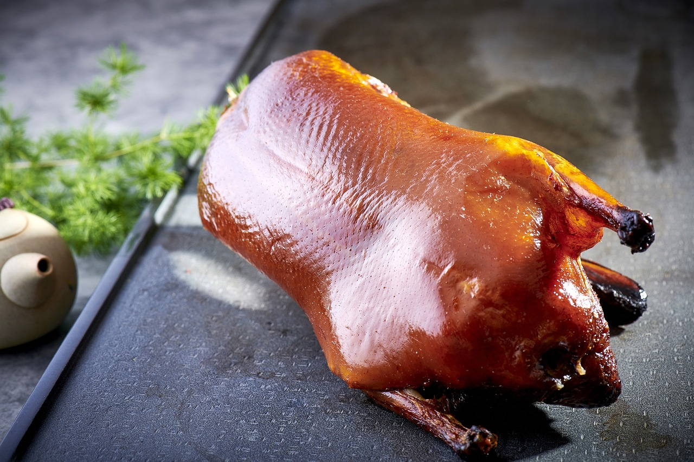
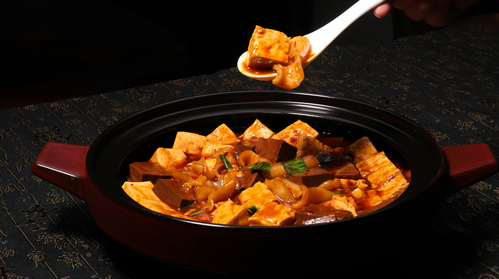

TOP
ブラジル
中国
フランス
ギリシャ
インド
インドネシア
イタリア
メキシコ
スペイン
タイ
トルコ
アメリカ
中国
北京ダック

北京ダックは、中国・北京発祥の伝統的な鴨（アヒル）料理です。
鴨を特製のタレ（醤油やハチミツをベース）に浸し、表面を乾燥させてから焼き上げます。
薄く伸ばした小麦粉の皮に、刻んだネギやきゅうり、甜面醤をのせ、皮と身を一緒に巻いて食べます。
麻婆豆腐

麻婆豆腐は、中国四川省・成都市発祥の代表的な豆腐料理です。
豆板醤のコクと山椒の痺れが特徴的な麻辣テイストで、ご飯にかけたり、小皿でつまんだりして楽しみます。
辛さと痺れがクセになる一品で、日本を含む世界中の中華料理店で広く親しまれています。